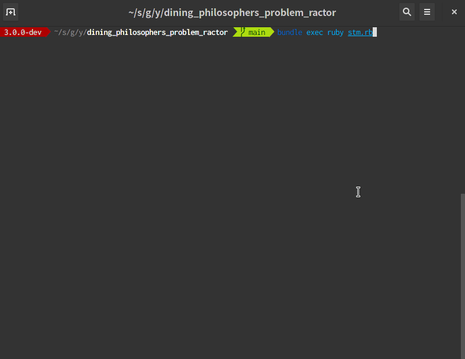

Ractorで「食事する哲学者の問題」を解く
Ruby に Software Transactional Memory (STM) を入れようと思った話 を読んで、そういえば STM で 「食事する哲学者の問題」 を解ける、という話を見たなと思い、やってみた。
食事する哲学者の問題
「食事する哲学者の問題」について軽く説明をする。N 人の哲学者が円卓に座り、食事をとる。それぞれの哲学者の間にはフォークが置かれており(N 人なら N 個になる)、自分の両側のフォークを手に持つことができれば食事ができる。詳しくは上記 Wikipedia を見るとよい。
まずはデッドロックを発生させてみる
素直に悲観的ロックでこの問題を解くとデッドロックが発生する。Ractor を使って書くと以下のようになる。
require 'securerandom'
NUM_OF_PHILOSOPHERS = 5
class Philosopher
def initialize(name, left, right)
@name = name
@left = left
@right = right
end
def eat
puts "#{@name} eating..."
sleep SecureRandom.random_number * 5
end
def think
puts "#{@name} thinking..."
sleep SecureRandom.random_number * 5
end
def take_forks
@left << :lock
@left.take
@right << :lock
@right.take
end
def put_forks
@right << :unlock
@right.take
@left << :unlock
@left.take
end
def start
loop do
take_forks
eat
put_forks
think
end
end
end
forks = NUM_OF_PHILOSOPHERS.times.map do
# Mutexはshareableではないので、Ractorで包む
Ractor.new do
mutex = Mutex.new
while msg = Ractor.receive
case msg
when :lock
mutex.lock
Ractor.yield(:ok)
when :unlock
mutex.unlock
Ractor.yield(:ok)
end
end
end
end
rs = NUM_OF_PHILOSOPHERS.times.map do |i|
Ractor.new("philosopher #{i + 1}", forks[i % NUM_OF_PHILOSOPHERS], forks[(i + 1) % NUM_OF_PHILOSOPHERS]) do |n, l, r|
Philosopher.new(n, l, r).start
end
end
Ractor.select(*rs)Mutex を包んだ Ractor を左と右のフォークとして哲学者に渡し、それぞれのロックが獲得できたなら、食事をする。という動きになっている。
これを実行すると以下のようにデッドロックが発生する。
$ ruby --version
ruby 3.0.0dev (2020-11-20T07:04:45Z master fac2498e02) [x86_64-linux]
$ ruby lock.rb
<internal:ractor>:38: warning: Ractor is experimental, and the behavior may change in future versions of Ruby! Also there are many implementation issues.
philosopher 1 eating...
#<Thread:0x0000557c6822c330 run> terminated with exception (report_on_exception is true):
philosopher 3 eating...
lock.rb:53:in `lock': <internal:ractor>:74:in `select': thrown by remote Ractor. (Ractor::RemoteError)
from lock.rb:68:in `<main>'
<internal:ractor>:130:in `take': thrown by remote Ractor. (Ractor::RemoteError)
from lock.rb:24:in `take_forks'
from lock.rb:38:in `block in start'
from lock.rb:37:in `loop'
from lock.rb:37:in `start'
from lock.rb:65:in `block (2 levels) in <main>'
lock.rb:53:in `lock': deadlock; recursive locking (ThreadError)
from lock.rb:53:in `block (2 levels) in <main>'STM を使って解く
STM で解く「食事する哲学者の問題」 - あどけない話 にあるように STM を使うと、デッドロックを回避できるようだ。
ractor-tvar を使えば同じように実装できるのかやってみる。
まずは Gemfile を作って、ractor-tvar をインストールしておく
# Gemfile
source 'https://rubygems.org'
git_source(:github) { |repo| "https://github.com/#{repo}.git" }
ruby '3.0.0'
gem 'ractor-tvar'この後、手元で ractor-tvar のサンプルコードを動かしたところ cannot load such file -- ractor/tvar/ractor_tvar.so (LoadError) というエラーがでた。そのため ractor_tvar.so の場所を手動で変更して回避した。自分の手元環境だけかもしれないが一応issue を起票しておいた。(2020/11/24 追記) この問題は 0.2.0 で修正された。
STM での実装だが、今回は以下のように実装した。
# frozen_string_literal: true
require 'securerandom'
require 'ractor/tvar'
NUM_OF_PHILOSOPHERS = 5
class Philosopher
def initialize(name, left, right)
@name = name
@left = left
@right = right
end
def eat
puts "#{@name} eating..."
sleep SecureRandom.random_number * 5
end
def think
puts "#{@name} thinking..."
sleep SecureRandom.random_number * 5
end
def take_forks
loop do
Ractor.atomically do
@left.value = @name.freeze if @left.value == nil
end
break if @left.value == @name
end
loop do
Ractor.atomically do
@right.value = @name.freeze if @right.value == nil
end
break if @right.value == @name
end
end
def put_forks
Ractor.atomically do
@right.value = nil
@left.value = nil
end
end
def start
loop do
take_forks
eat
put_forks
think
end
end
end
forks = NUM_OF_PHILOSOPHERS.times.map do
Ractor::TVar.new
end
rs = NUM_OF_PHILOSOPHERS.times.map do |i|
Ractor.new("philosopher #{i + 1}", forks[i], forks[(i + 1) % NUM_OF_PHILOSOPHERS]) do |n, l, r|
Philosopher.new(n, l, r).start
end
end
Ractor.select(*rs)Ractor::TVar に自分の名前を入れることでロックの代わりとした。
これを実行してみると以下のように、デッドロックになることなく進むことが確認できた。

まとめ
STM を使うことで、食事する哲学者の問題のデッドロックを回避できた。 今回作ったコードは yoshitsugu/dining_philosophers_problem_ractor として GitHub に公開してある。